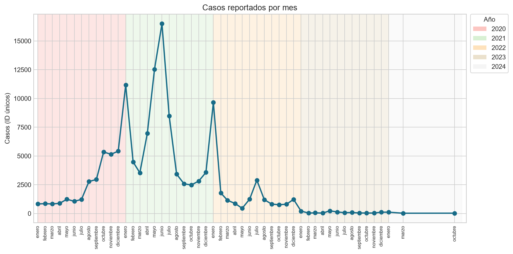
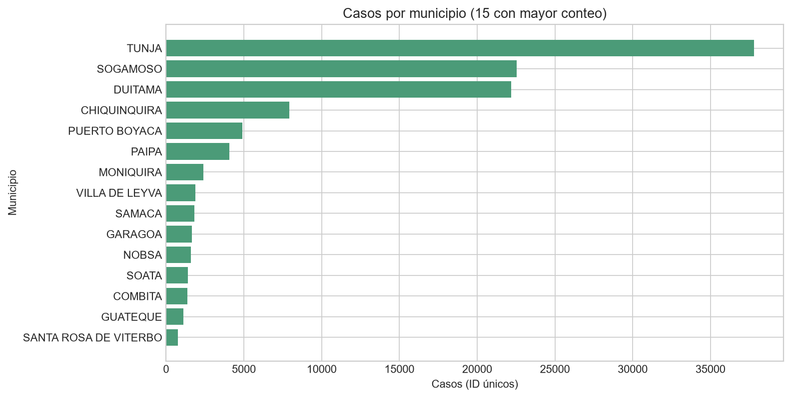

Evolución de casos reportados de COVID-19
Departamento: BOYACA · Periodo: 2020-01-05 — 2024-10-01
La serie agrupa por mes la fecha de reporte web y cuenta identificadores únicos de caso.
Hallazgo
Entre January 2020 (831) y October 2024 (25), el conteo cambió -97.0% entre el primer y el último mes con datos. Este resumen se calcula automáticamente a partir de la serie mensual; no implica causalidad.
Casos reportados por mes

Distribución por municipio

Limitaciones
- El conteo usa IDs de caso únicos; interpreta cada ID como un caso reportado según el campo disponible, no como medida de infección real o incidencia poblacional.
- La fecha usada es «fecha reporte web» (publicación), no necesariamente fecha de diagnóstico, inicio de síntomas o contagio.
- El archivo es una extracción local: puede no coincidir con revisiones posteriores de la fuente. La ficha menciona actualizaciones y fe de erratas.
- Se excluyeron 0 filas con fecha inválida o ID vacío; se detectaron 0 filas duplicadas exactas en el origen.
- Los municipios con valor faltante no aparecen en el gráfico municipal. Los gráficos describen conteos, no tasas ajustadas por población.
Fuente: Casos positivos de COVID-19 en Colombia — Datos Abiertos (Instituto Nacional de Salud).
CSV analizado: Casos_positivos_de_COVID-19_en_Colombia._20261109.csv. No se publican registros individuales.